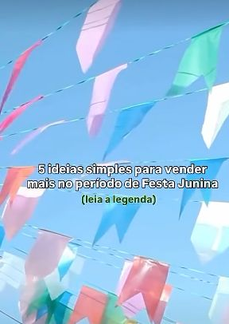
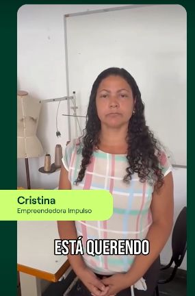

Coletar
Posts de 40 a 50 perfis do nicho MPE pelo Instagram e pelo YouTube, só por rotas oficiais.
Entrega: 2 a 5 mil posts com métricas e data
Um sistema que coleta posts públicos do nicho MPE, descobre o que faz um conteúdo engajar e gera criativos para o Impulso Stone, sempre apontando os posts reais que inspiraram cada ideia.

Criativos reais do Impulso Stone no Meta Ads, fevereiro a outubro de 2026. Fonte: histórico de campanhas entregue pela Stone.
Cada passo entrega algo concreto para o seguinte. O detalhe técnico de cada um está na arquitetura, mais abaixo.
Posts de 40 a 50 perfis do nicho MPE pelo Instagram e pelo YouTube, só por rotas oficiais.
Entrega: 2 a 5 mil posts com métricas e data
Engajamento dividido pelos seguidores, top 10% em cada faixa de tamanho e um grupo controle para comparar.
Entrega: top posts e grupo controle
A IA assiste aos vídeos e preenche a rubrica: gancho, formato, tema, tom, CTA. Uma pessoa valida 50 posts.
Entrega: cada post descrito em JSON
O que aparece mais no top do que no controle, os formatos em alta, as ferramentas do momento e os criadores com perfil de embaixador.
Entrega: padrões com prova
O agente gera Reels, carrossel, Stories e estático no tom do Impulso. Tudo passa por verificação e aprovação humana.
Entrega: pacote de criativos, Playbook da Stone e guia detalhado
Os criativos do próprio Impulso mostram por que o sistema mede engajamento e sinal de lead. Os posts de baixo tiveram reação, mas quase ninguém clicou. Esses aprendizados entram no contexto do agente.

A cor diz quem faz o trabalho. O selo ♻ Suno marca o que vem pronto ou quase pronto do Case Suno.
| Dado | Para quê |
|---|---|
| Seguidores | Denominador da métrica; define a faixa do perfil |
| Curtidas e comentários | Numerador da métrica; comentários ÷ curtidas mede conversa |
| Tipo de mídia | Separa Reels, carrossel e imagem para achar os formatos em alta |
| Legenda, título | Tema, CTA, tom e ferramentas citadas |
| Data de publicação | Regra dos 14 dias e janela de 90 dias |
| Vídeo e thumbnail | Gancho dos 3 segundos, rosto, texto na tela, ritmo |
| Link do post | Referência em cada criativo e no Playbook da Stone |
| Histórico da Stone | Aprendizados no contexto e calibração com CTR real |
Métricas custam zero. Texto vai em lotes de 20 legendas por chamada. Só cerca de 400 vídeos passam pela IA de visão. Volumes estimados.
O Perspecta já resolve metade do problema: pipeline em LangGraph, avaliação híbrida com reescrita, revisão humana, slides renderizados e um cliente de LLM com cache e controle de cota. Falta a outra metade: coletar posts e descobrir padrões.
shared/llm_client.pyModos live, simulated e record; limitador de tokens; espera no 429; teto de chamadaspipeline/graph.py + reflection.pyGerar → checar → julgar → reescrever, com pausa para revisãoevaluation/judge.py + concordance.pyJuiz com rubrica versionada; aprovação calculada pelo códigorendering/playwright_renderer.pySlides 1080×1350 com checagem de texto que não coube e de contrasteapp/validation_screen.pyAprovar, editar, rejeitar com motivopersistence/PostgreSQL: avaliado e arquivado; o app usa JSONL, CSV e SQLiteexport/Roteiro para pessoa e para IA, PNGs, ZIPtests/fakes/llm.pyTestes sem redeevaluation/deterministic.pySai nível Flesch/densidade; entram refs existentes, CTA, tamanho por formato, termos proibidosevaluation/flesch_ptbr.pyVira checagem de clareza para o público de 35 a 54 anosevaluation/format_checks.pyCarrossel e roteiro já existem; somar Stories e estáticogeneration/prompts/De níveis para formatos e segmentos, com stone_contextconfig/*.yamlGuia de estilo, termos proibidos e tokens visuais do Impulsoapp/theme.pyVermelho Suno → verde e limão Impulsocollection/scheduler.pyDe RSS a cada 3h para coleta semanaladmission/Paywall e texto financeiroextraction/Extração ancorada de documentosglossary/Glossário do BCBtriangulacao/Comparação de fontescollection/pautas.pyAgrupamento de notíciasO PostgreSQL do Suno foi avaliado e arquivado: a análise lê JSONL e CSV, e o app guarda peças, versões e decisões em SQLite. Cinco mil posts cabem em arquivos, e não há servidor de banco para manter.
O cliente Groq do Suno já controla cota e cache. O Gemini entra apenas na camada 2, onde é preciso assistir ao vídeo.
Trazer só os módulos da lista, com os testes deles. Carregar as partes de notícias atrasaria e confundiria a banca.
Ferramentas em cinza devolvem dados da base. Ferramentas em violeta usam o LLM. O modelo nunca inventa um número: ele só redige com o que as ferramentas trouxeram.
Mesmo mecanismo do Suno: o juiz dá nota com justificativa por critério, e o código decide a aprovação (média ponderada ≥ 7 e nenhum critério abaixo de 5).
| Critério | Peso |
|---|---|
| Aderência aos padrões do top (gancho, formato, duração) | 1,5 |
| Próximo passo claro (CTA) | 1,3 |
| Tom do Impulso: acolhedor, simples, sem promessa exagerada | 1,2 |
| Clareza para quem tem de 35 a 54 anos | 1,0 |
| Concretude: dor, número ou exemplo em vez de frase genérica | 1,0 |
class AgentInput(BaseModel): mode: Literal["analisar", "recomendar", "gerar_criativo", "gerar_pacote", "buscar_embaixador"] query: str segment: str | None = None filters: Filters | None = None # plataforma, janela, faixa class AgentOutput(BaseModel): findings: list[Finding] # característica, frequência, lift, n reference_posts: list[RefPost] # link, métrica, categorias creatives: list[Creative] # cada um com reference_post_ids creators: list[CreatorScore] = [] confidence_flag: bool # poucos posts sustentam o padrão explanation: str
O agente escolhe os formatos que estão em alta, busca os posts de referência e escreve no tom do Impulso. O carrossel sai como imagens prontas, renderizadas pelo mesmo motor do Suno.
| Formato | O agente gera | Base |
|---|---|---|
| Reels | Gancho de 3s, roteiro com tempos, texto na tela, legenda, CTA | Top do Instagram |
| Shorts | Mesmo roteiro adaptado, título, descrição | Top do YouTube |
| Carrossel | 5 slides renderizados em PNG + legenda | Top do Instagram |
| Stories | 3 a 5 telas com enquete ou caixinha | sem base externa |
| Estático | Frase principal, apoio, CTA | Top + histórico do Ads |
Playbook da Stone (entregável): padrões top × controle, o que evitar, formatos recomendados, perfis em destaque, exemplos reais, 5+ criativos aprovados prontos para produção e limitações. Gerado da base, atualiza quando os dados mudam.
Guia detalhado da semana (extra, para o empreendedor): toda sexta às 7h, o tema da semana aprofundado em passo a passo, checklist e exercício. A Stone revisa e envia pela ferramenta dela; o sistema não guarda e-mails.
Os parceiros atuais servem de régua: se o scorecard não reconhecer quem a Stone já validou, ele está errado. Para completar as fotos, salve cada imagem em docs/img/embaixadores/ com o @ como nome do arquivo.
 RFfoto: rodrigofinancas.jpg
RFfoto: rodrigofinancas.jpg ICfoto: indiacorrea.jpg
ICfoto: indiacorrea.jpg WRfoto: wr_walterrodrigues.jpg
WRfoto: wr_walterrodrigues.jpg AJfoto: oijedai.jpg
AJfoto: oijedai.jpg| Dimensão | Como medir | Peso |
|---|---|---|
| Consistência | Lift mediano e % de posts no top; um viral isolado não basta | 25 |
| Lead | % de posts com CTA, comentários ÷ curtidas | 20 |
| Autenticidade | Empreendedor real, rosto, prova social, maquininha visível | 20 |
| Marca | Tom, clareza, pilares do Impulso | 20 |
| Atividade | Frequência nos últimos 90 dias | 15 |
Parceria paga com concorrente (InfinitePay, PagBank, Cora), temas polêmicos, engajamento anômalo para a faixa, muitos comentários genéricos. Um alerta nunca fica escondido atrás de uma nota alta.
O sistema não infere idade, gênero ou outros atributos sensíveis. Ele faz a triagem; a Stone decide.
Três itens no menu e um filtro. O sistema primeiro propõe (sem gastar o modelo de linguagem) e só produz a peça quando alguém aprova a ideia. A Agenda sugere o que postar e quando, sem repetir segmentos e acompanhando as datas do comércio.
Abra o mockup, entregue as tarefas uma por vez e não explique nada. Anote onde a pessoa hesita, volta atrás ou pergunta.
config/datas_comemorativas.yamlconfig/horarios.yamlCom a base do Suno, o esforço vai para a coleta e as descobertas, que são a parte nova.
Fazer no primeiro dia. Plano B: mais peso no YouTube, sem cair para scraping.
Sinal de lead externo vira CTA + comentários ÷ curtidas.
Cliente do Suno: cache, espera, teto de chamadas e modo simulado.
Grupo controle e lift com intervalo de confiança.